Voor dit groepsproject herontwierp ik de website van Jazzzolder, een historische jazzclub in de Predikherenkerk in Mechelen. We verbeterden de websitestructuur, ticketverkoop en visuele identiteit.
Mijn rol omvatte UX/UI-design, het ontwerpen van brandsheets en pagina's in Figma en de uiteindelijke implementatie in WordPress met Elementor.
De bestaande website bevatte veel tekst, gebruikte veel kaders en had een onduidelijke structuur. Niet alle navigatielinks werkten en belangrijke inhoud, zoals foto’s en het gastenboek, was moeilijk vindbaar.
Onze opdracht was om de rijke geschiedenis, routebeschrijving en concertinformatie te behouden, maar de website tegelijk overzichtelijker, aantrekkelijker en gemakkelijker te gebruiken te maken.
Tijdlijn van het Jazzzolder-project
Informatie van Jazzzolder
en bezoek aan Jazzzolder
Research
Branding
Eerste prototype
Tweede prototype
Implementatie in WordPress
Eindresultaat
Jury
Over Jazzzolder
Jazzzolder is een jazzclub in de Predikherenkerk in Mechelen. Elke tweede en vierde vrijdag van de maand organiseert de club concerten met Belgische en internationale jazzmuzikanten.
De website ondersteunt vaste bezoekers én nieuwe geïnteresseerden. Bezoekers moeten snel concerten, praktische informatie en de geschiedenis van Jazzzolder kunnen vinden. Daarnaast is er merchandise die bezoekers tijdens concertavonden kunnen bestellen.
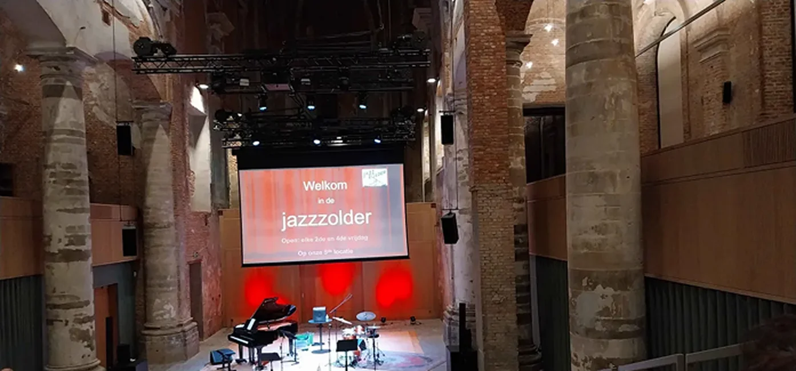
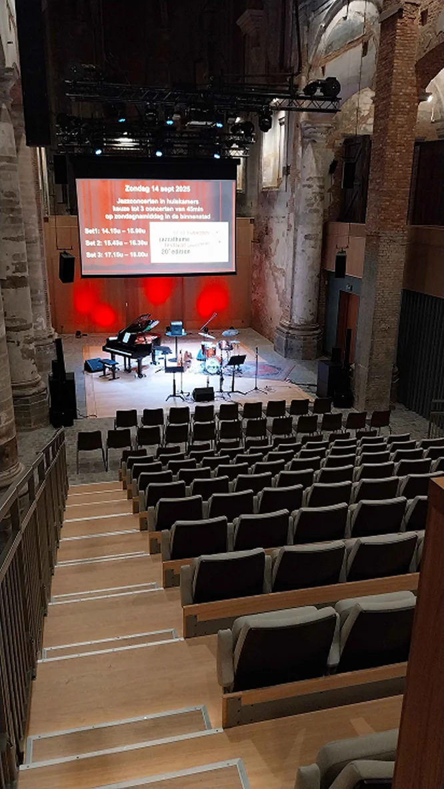
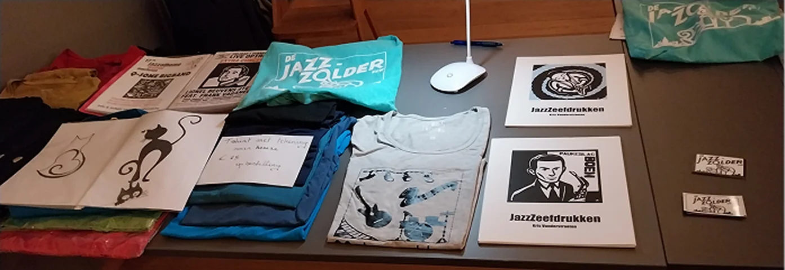
Research en briefing
Het project startte met een briefing van Jazzzolder en een PowerPoint met inhoudelijke vereisten. De organisatie gaf aan welke informatie moest blijven en welke onderdelen op de bestaande website belangrijk waren.
We bezochten ook een concertavond. Door de locatie, bezoekers en sfeer zelf te ervaren, konden we een website ontwerpen die niet alleen functioneel is, maar ook aansluit bij het warme en culturele karakter van Jazzzolder.
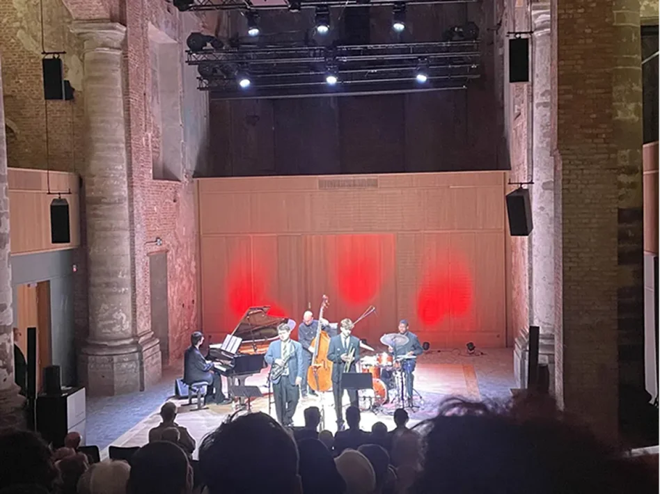
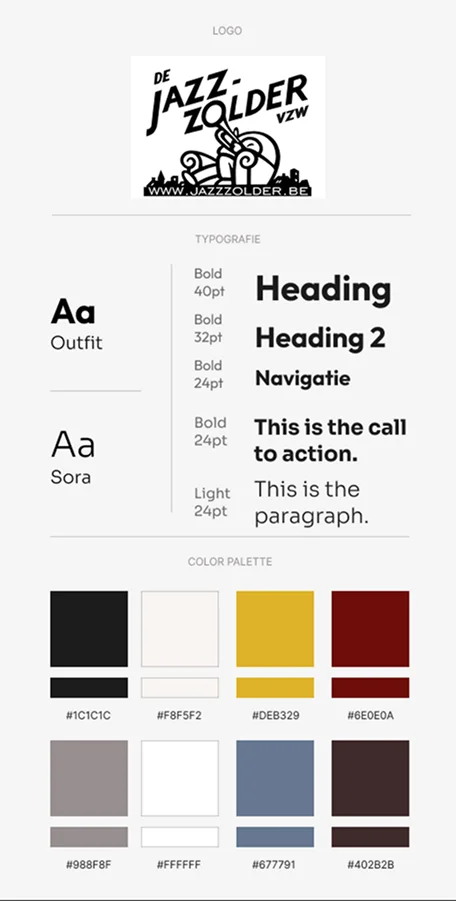
Brandsheet en visuele identiteit
We behielden het bestaande logo en ontwikkelden een brandsheet met een warm, energiek kleurenpalet en duidelijke typografie. Donkere tekst op een lichte achtergrond zorgt voor leesbaarheid, terwijl geel, rood en donkere accenten belangrijke acties en titels benadrukken.
Voor de typografie kozen we Outfit voor headings en navigatie, en Sora voor lopende tekst en call-to-actions. Deze combinatie creëert een duidelijke hiërarchie en een herkenbare, eigentijdse uitstraling.
Figma prototype
In Figma ontwierpen we een website met pagina’s voor concertaffiches, galerij, merchandise, tickets en informatie over Jazzzolder. We brachten een duidelijkere structuur aan, voegden meer sfeerbeelden toe en gebruikten call-to-actions om bezoekers naar relevante content te leiden.
Een nieuw onderdeel was de merchandisepagina. Bezoekers kunnen er een patroon, producttype, kleur en gegevens kiezen via een overzichtelijke stappenflow. Zo wordt het made-to-orderproces begrijpelijk en laagdrempelig.
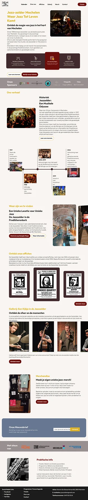
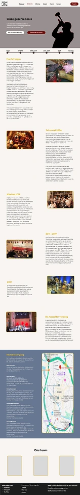
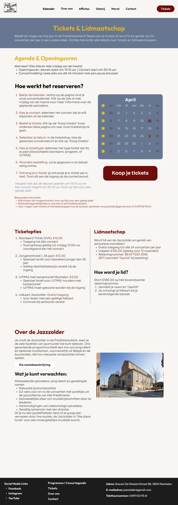

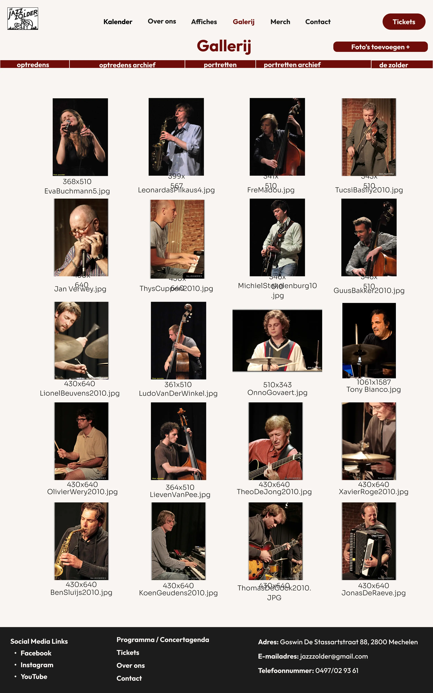
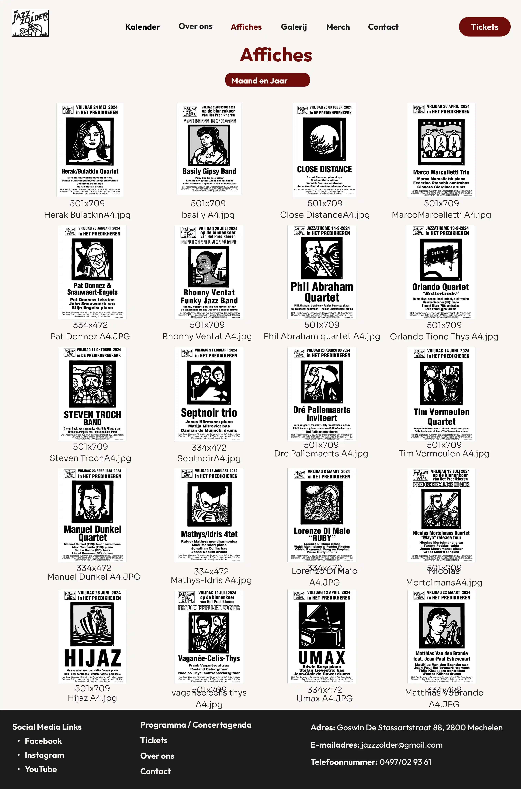
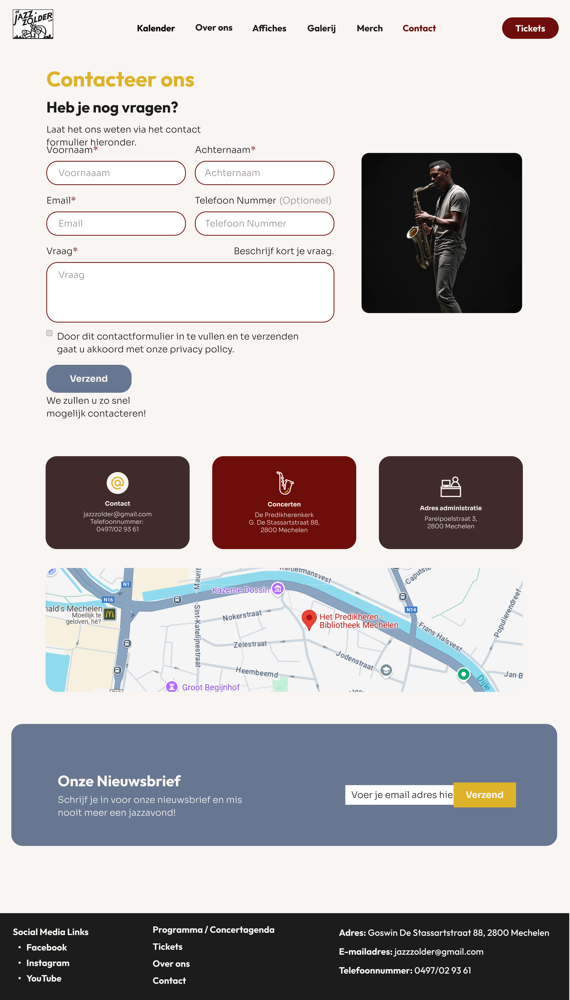
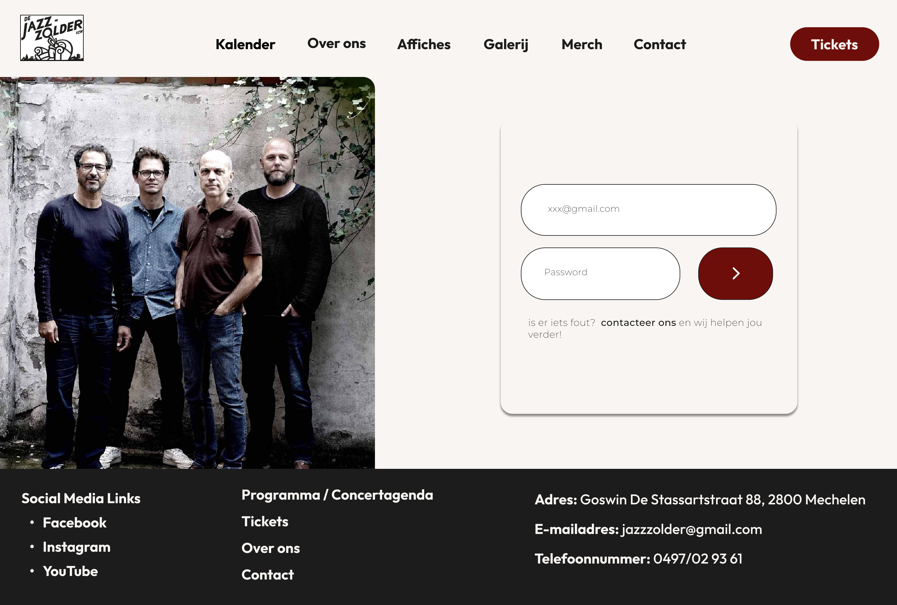
Aanpassingen na de feedback
Na feedback van Jazzzolder en de docenten verbeterden we de navigatie, leesbaarheid en visuele consistentie. We verwijderden de loginpagina, maakten het logo zichtbaar tijdens het scrollen en voegden een directe agenda-link toe aan de navigatie.
We vergrootten de tekst, verbeterden de lijnhoogte, voegden consistente afgeronde hoeken toe en beperkten overbodige kaders. Op desktop vervingen we sleep-interacties door duidelijke carrousels met pijlen.
Ook maakten we sponsorlogo’s klikbaar, voegden we businformatie toe aan de routeplanner en verbeterden we de contactpagina met een bijlageknop en een teaser voor het volgende concert.
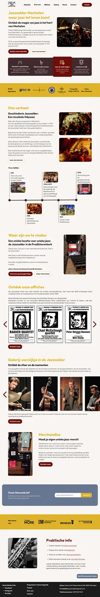
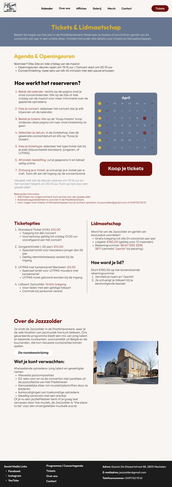
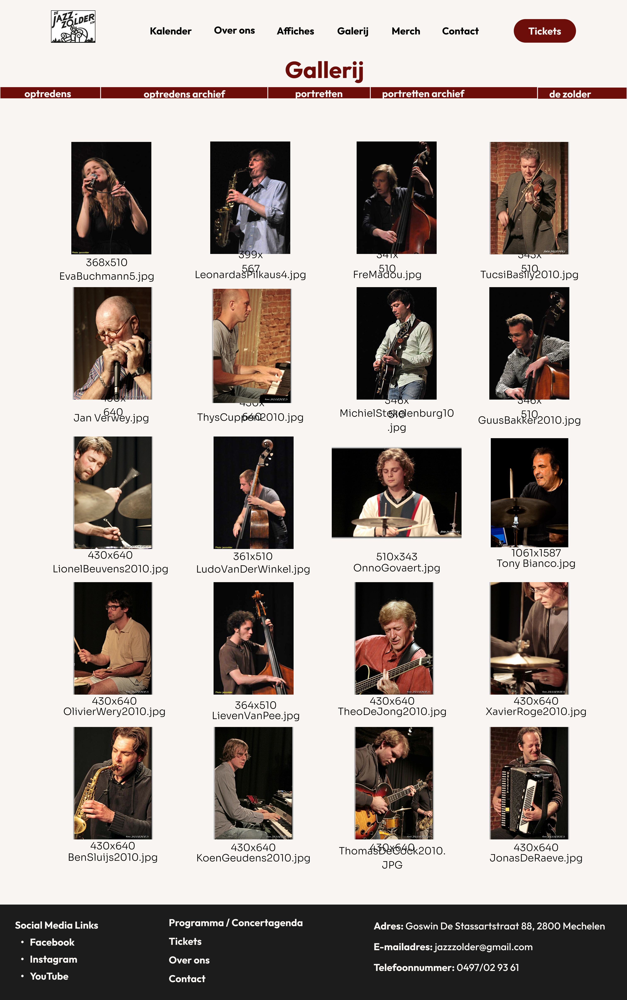
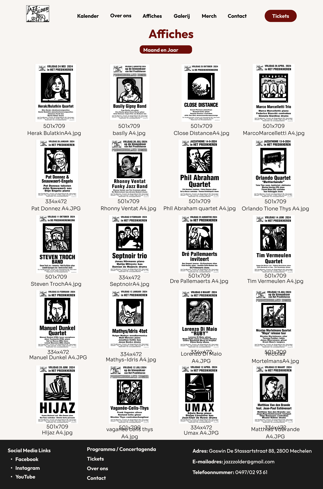
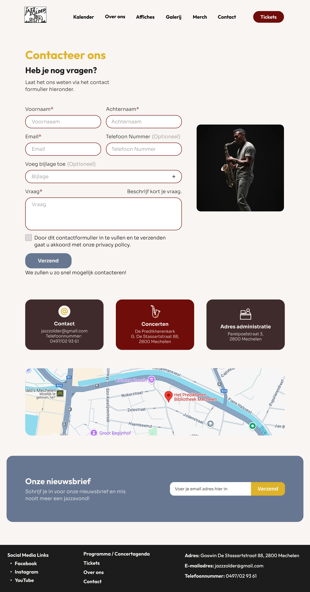
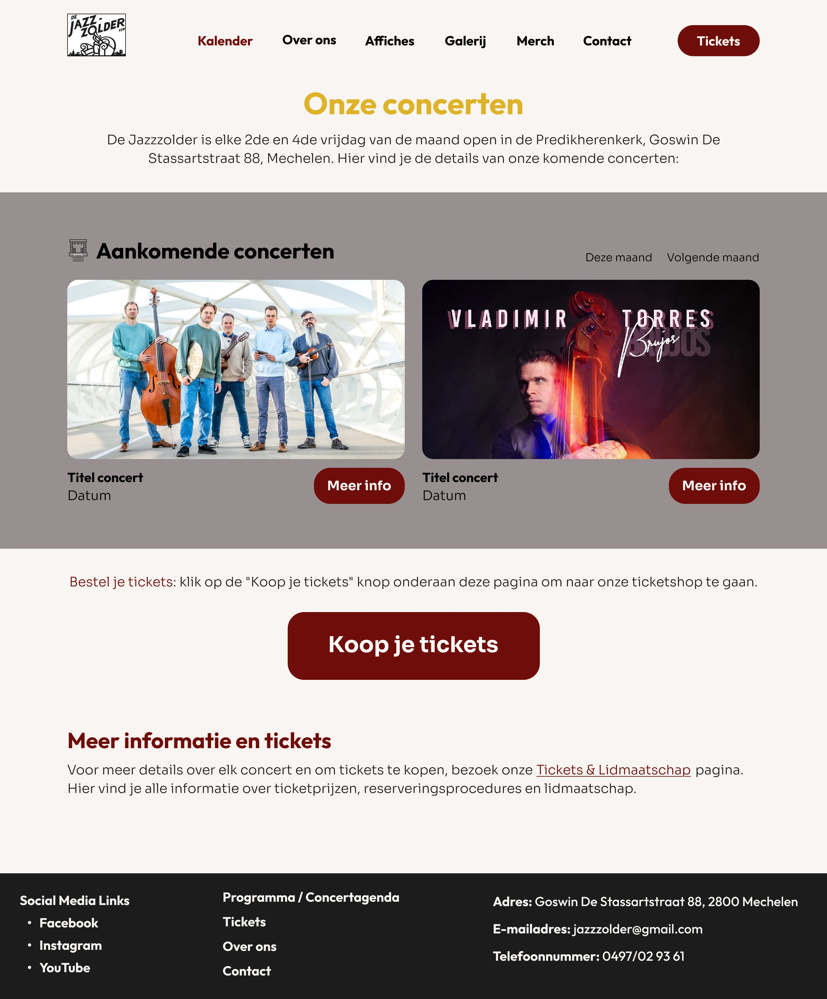
Implementatie in WordPress
In de laatste fase bouwden we de website in WordPress met Elementor. We verdeelden de pagina’s, navigatie en footer binnen het team en pasten het ontwerp aan waar technische beperkingen dat nodig maakten.
De merchandiseflow werd bijvoorbeeld opgesplitst in afzonderlijke stappen met een knop “Volgende”. Ook de eventpagina en affichecarrousel kregen een aangepaste uitvoering door de mogelijkheden van Elementor. Ondanks deze wijzigingen bleef de website intuïtief en herkenbaar.
Mijn bijdrage
Binnen het team werkte ik mee aan het analyseren van de bestaande website, het verwerken van de briefing, het uitwerken van de brandsheet, het ontwerpen van high-fidelity designs in Figma en de implementatie in WordPress. Ik droeg bij aan het structureren van de inhoud en aan het vertalen van de identiteit van Jazzzolder naar een overzichtelijke digitale ervaring.
Ik ontwierp de over ons pagina en de merchandise-pagina in Figma. Daarnaast werkte ik mee aan de WordPress-uitwerking van de merchpagina en de over ons-pagina.